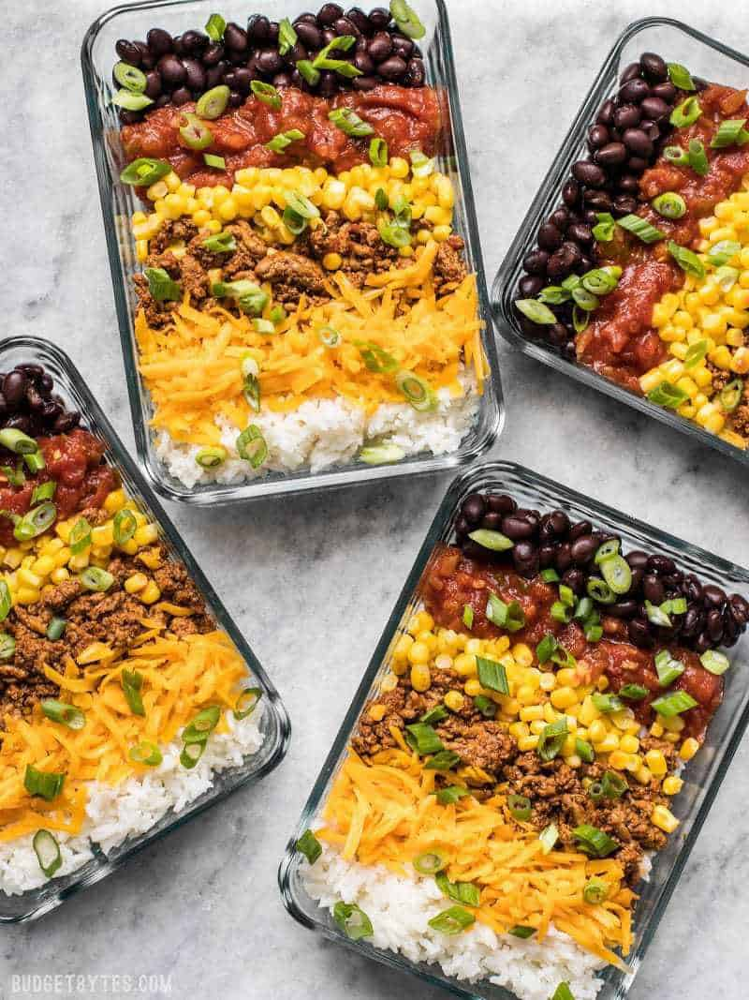

Burrito Bowl
Ahhh... yes... Burrito Bowl. My mom used to make this for me
all the time and I have to say it's likely one of my favorite dishes of
all time!
Ingredients:
- 4 cups of cooked rice ($0.99)
- 1 lb. ground turkey or beef ($3.99)
- taco seasoning* ($0.67)
- 1 cup of frozen corn kernels ($.38)
- 1 15oz. can of black beans ($0.59)
- 4 oz. cheese (about 1 cup shredded) ($1.00)
- 1 1/3 cup salsa ($1.30)
- 2 green onions ($0.13)
Instructions:
- Cook the rice first.
You will be able to prepare all the rest of the ingredients
as the rice cooks. Cook the rice according to the package
directions. To yield about 4 cups white rice, I use 1.5
cups uncooked rice and 2.5 cups water, but this may vary
depending on your rice variety, so be sure to check the
package.
- While the rice is cooking, add the ground turkey or
beef to a skillet and cook over medium heat until it
is cooked through. Depending on the fat content of
your meat, you may need to add a little oil to the
skillet to keep it from sticking.
- Once the meat is fully cooked, add the taco
seasoning and 1/2 cup water. Stir and simmer
the meat and spices until the water reduces
to a saucy consistency (about 5 minutes). Turn
the heat off and set the meat aside.
- Once the meat is fully cooked, add the taco seasoning
and 1/2 cup water. Stir and simmer the meat and spices
until the water reduces to a saucy consistency
(about 5 minutes). Turn the heat off and set the meat aside.
- Once the rice is finished, fluff it with a fork and divide
it between four containers. Divide the remaining six bowl
ingredients between the containers as well (taco meat, corn,
beans, cheese, salsa, and green onions).
- Reheat the bowls for 1-2 minutes before eating to melt the
cheese and heat the meat and rice through.
Nutritional Value:
Serving: 1 Serving ・ Calories: 568.85 kcal ・ Carbohydrates: 47.93 g ・
Protein: 36.6 g ・ Fat: 27.15 g ・ Sodium: 1622.33 mg ・ Fiber: 12.5 g
References:
Recipe was gathered from Budeget Bites.com.